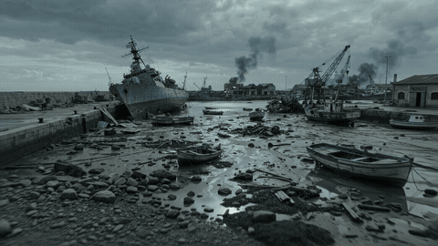
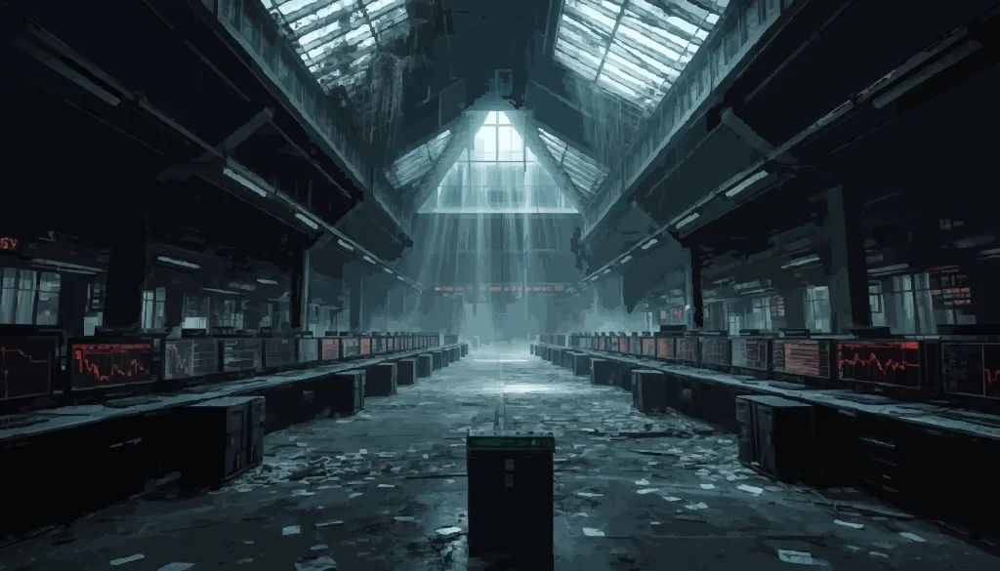
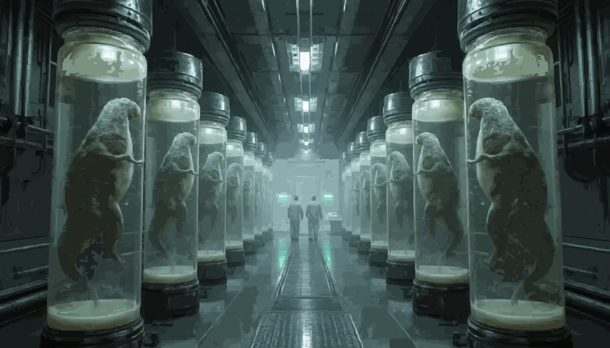
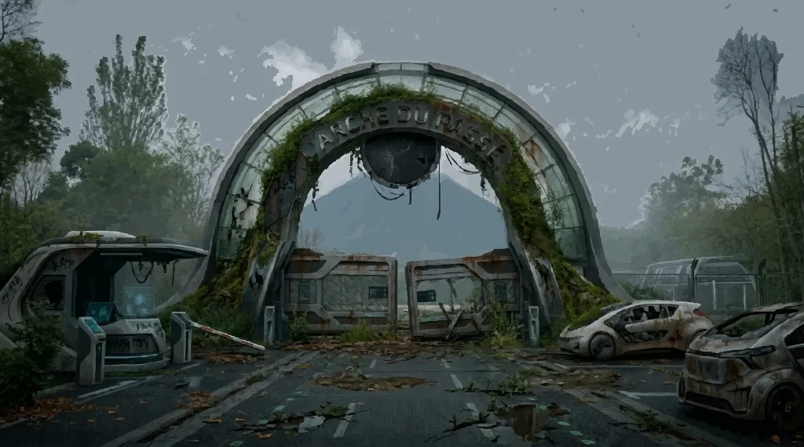
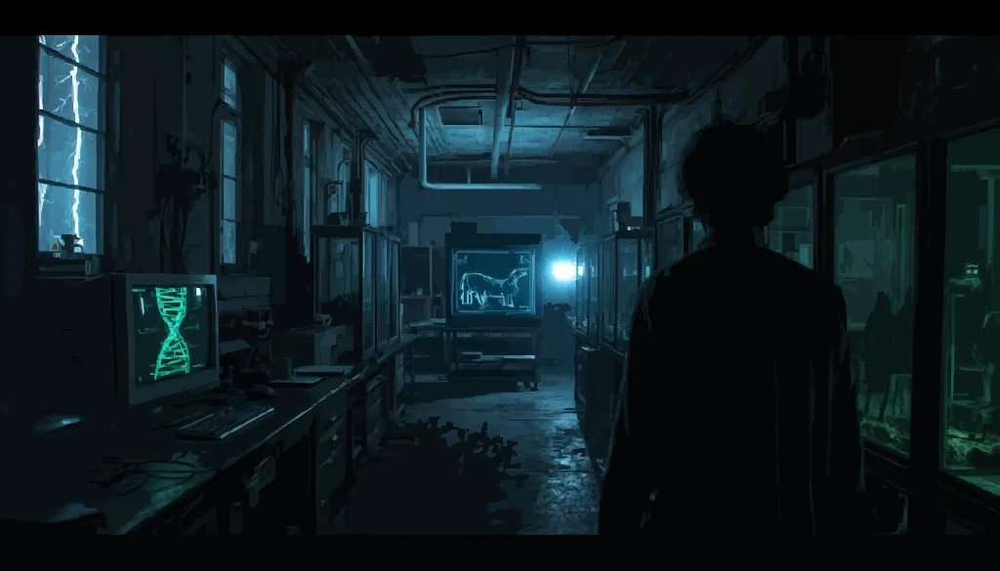
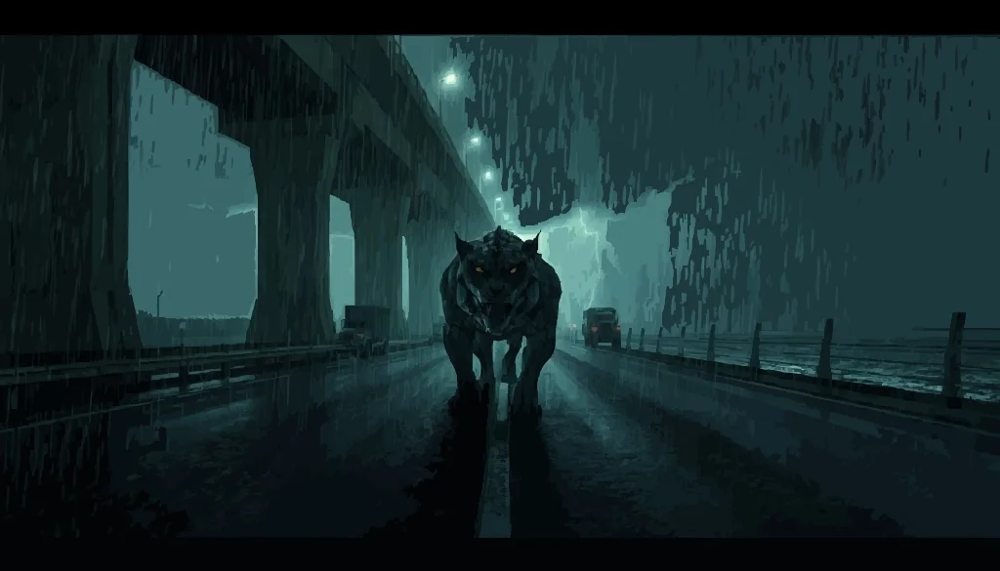

Archives : Origine
Dossier déclassifié · Chronique de l'effondrement en six actes (2049 – 2068)

La fin de la Troisième Guerre Mondiale
En 2049, après plus d'une décennie d'affrontements acharnés, les blocs militaires sont exsangues et les arsenaux vides. La guerre s'éteint sans vainqueur ni traité lorsqu'une série de mégaséismes sans précédent ébranle la Méditerranée centrale. Des tsunamis dévastateurs rasent les ports de Sicile, de Calabre, du Péloponnèse et du Liban, engloutissant les flottes et détruisant les centres de commandement.
Au cœur de cette zone de rupture émerge une île de roche noire dominée par un volcan. En remontant des abysses, elle exhume des blocs de glace fossile renfermant des carcasses congelées de grands mammifères disparus du Quaternaire : tigres à dents de sabre, rhinocéros laineux et lions des cavernes. Dès les premiers relevés de la marine italienne, un phénomène secret est constaté : bien qu'éteint, le volcan central attire une concentration permanente d'orages et de foudre.

La crise économique
La paix de 2049 est une paix de ruines. Privés de ressources, les États affrontent près de vingt ans de micro-guerres localisées pour le contrôle de l'eau, de l'énergie et des détroits maritimes exploitables. L'instabilité géopolitique et les sanctions à répétition pulvérisent la confiance dans le dollar américain, qui s'effondre au profit de l'euro, désormais devise mondiale de référence.
Dans une économie sinistrée où les ménages consacrent plus de 70% de leurs revenus à la simple subsistance alimentaire et énergétique, le tourisme s'effondre. Prêts à tout pour relancer l'activité, les gouvernements financent aveuglément les promesses technologiques des multinationales. Cette misère économique rendra possible le financement colossal de l'Arche du Passé, tout en condamnant d'avance sa viabilité commerciale.

L'origine du projet – L'Arche du Passé
Attirées par les tissus préservés des carcasses, des firmes de biotechnologie, d'agroalimentaire et de défense forment un consortium pour exploiter l'ADN préhistorique. Installé dans les galeries souterraines fortifiées de l'ancienne base navale Thétis, le projet « L'Arche du Passé » s'associe aux laboratoires Z-Territoire (France) pour le clonage de mammifères et Wara (Bolivie) pour l'hybridation génétique.
Deux programmes coexistent sous le même toit : une façade scientifique officielle promettant de réanimer les espèces du Quaternaire pour la médecine et l'ouverture d'un gigantesque parc touristique baptisé « QWERTY », et un programme secret militarisé produisant des chimères robustes croisées avec des reptiles et des insectes (Croc-lynx, Rhinocéros-frelon, Titan Wara). L'ensemble est alimenté gratuitement par l'énergie de la foudre captée sur le cratère.

L'abandon du projet
Ouvert en 2064 après quinze années d'efforts technologiques, le parc QWERTY se heurte brutalement à la réalité de la crise. Pour rentabiliser leurs investissements astronomiques, les actionnaires fixent des prix d'entrée inabordables pour la population. Les allées restent désertes, réservées à une poignée d'investisseurs et de délégations privilégiées, tandis que les premiers incidents de sécurité (morsures, clôtures forcées) sont dissimulés.
En 2066, ruiné par la faillite de plusieurs partenaires et le gel de subventions étatiques, le consortium suspend ses activités et évacue le personnel civil. Faute de budget et de consensus juridique entre États, les créatures sont laissées dans leurs enclos sous scellés administratifs. Pire encore, les trois liaisons monumentales (deux ponts autoroutiers et un tunnel ferroviaire) reliant l'île à l'Italie, à la Grèce et au Liban sont laissées dressées sur la mer.

La continuation illégale
Refusant d'abandonner le travail de toute une vie, un noyau dur de généticiens de Z-Territoire et de Wara s'enferme dans les niveaux bunkerisés de la station Thétis. Profitant de l'électricité illimitée générée par la foudre, ils poursuivent leurs travaux en toute clandestinité, affranchis de toute éthique et de tout contrôle gouvernemental, ravitaillés en secret par des réseaux de contrebande maritime.
Les scientifiques observent l'acclimatation des clones à l'état sauvage et fabriquent des créatures instables, du redoutable Molosse des mangroves au calme Hibou-chat des neiges. En juillet 2067, une balise automatique défaillante émet un signal capté par l'armée italienne, qui classe l'affaire pour éviter la panique. Dans l'ombre, un technicien dissident réussit à copier les données du terminal central : ces fichiers formeront la base de données de Paléosurvie.

La grande évasion
Dans la nuit du 14 au 15 juin 2068, un orage d'une violence cataclysmique s'abat sur l'île. La surtension foudroyante fait sauter les générateurs, désactive les clôtures d'impulsion et déverrouille l'ensemble des sas de sécurité. Libérés de leurs enclos, des meutes de prédateurs préhistoriques et de chimères de combat s'engouffrent sur les trois viaducs restés ouverts vers les continents.
En quelques heures, le Croc-lynx et la Harpie-varan colonisent les ruines italiennes, les Molosses infestent les zones humides de Grèce, et le gigantesque Titan Wara pulvérise les voies d'accès au Liban. Dépassées, les armées régionales ne peuvent contenir la déferlante. Face au silence des autorités, des lanceurs d'alerte diffusent clandestinement l'archive complète sur le réseau : le portail « Paléosurvie » est né pour sauver ce qui peut encore l'être.